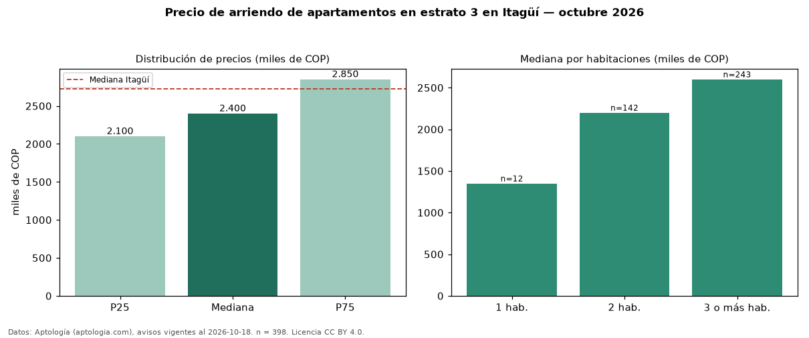

Precio de arriendo de apartamentos en estrato 3 en Itagüí — octubre 2026
Con 398 avisos vigentes, el canon mediano de apartamentos en estrato 3 en arriendo en Itagüí es COP 2,40 millones al mes. Frente a la mediana de los apartamentos en arriendo de Itagüí (COP 2,73 millones, n = 912), queda 12 % por debajo; este segmento reúne el 44 % de esos avisos. Por metro cuadrado, la mediana es COP 38.462/m² al mes (n = 397), 4 % por debajo de los apartamentos en arriendo de Itagüí (COP 40.000/m²). El área mediana anunciada es 65 m². El segmento con más oferta es el de 3 o más habitaciones (243 avisos, mediana COP 2,60 millones); pasar de 1 habitación a 3 o más habitaciones cambia la mediana +93 %. 64 % de los avisos con el dato declara parqueadero. La mitad central de los avisos va de COP 2,10 millones a COP 2,85 millones (razón 1,4), una dispersión baja. Datos: Aptología (aptologia.com), CC BY 4.0 — https://www.aptologia.com/arriendo/itagui. Archivos: PDF, CSV con las cifras y gráfica PNG.

| Avisos únicos | 398 |
|---|---|
| Percentil 25 | COP 2.100.000 |
| Mediana | COP 2.400.000 |
| Percentil 75 | COP 2.850.000 |
| Mediana por m² | COP 38.461 |
Fuente: avisos vigentes de portales inmobiliarios recopilados por Aptología, deduplicados (mínimo 30 avisos únicos por celda). Precios pedidos, no cerrados. Fecha: 2026-10-18.